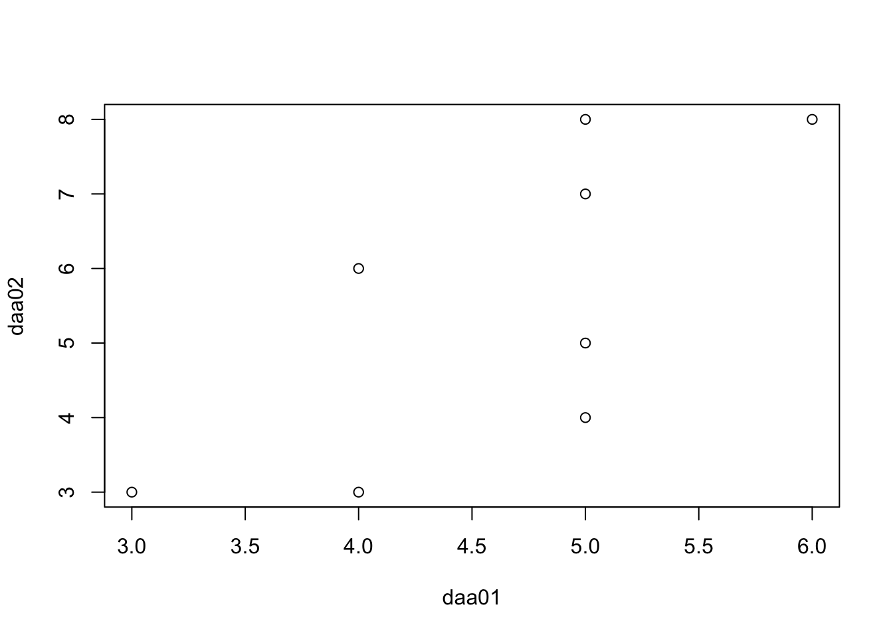
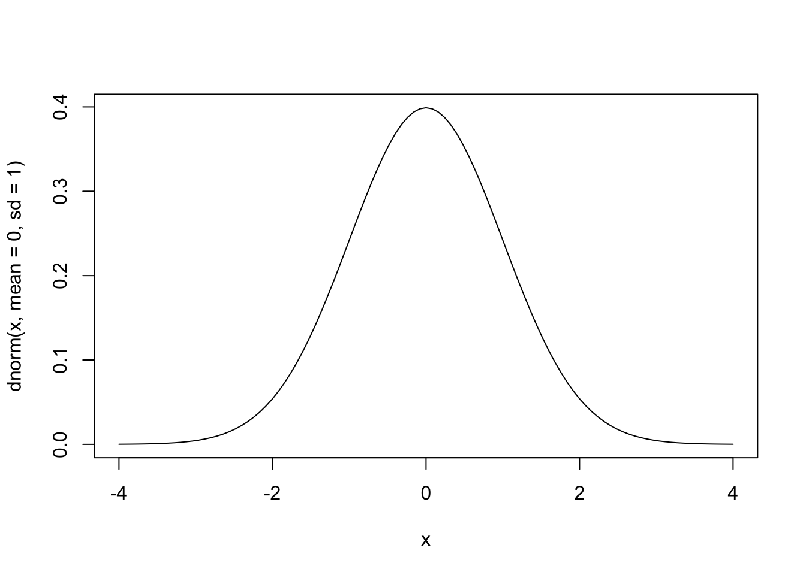
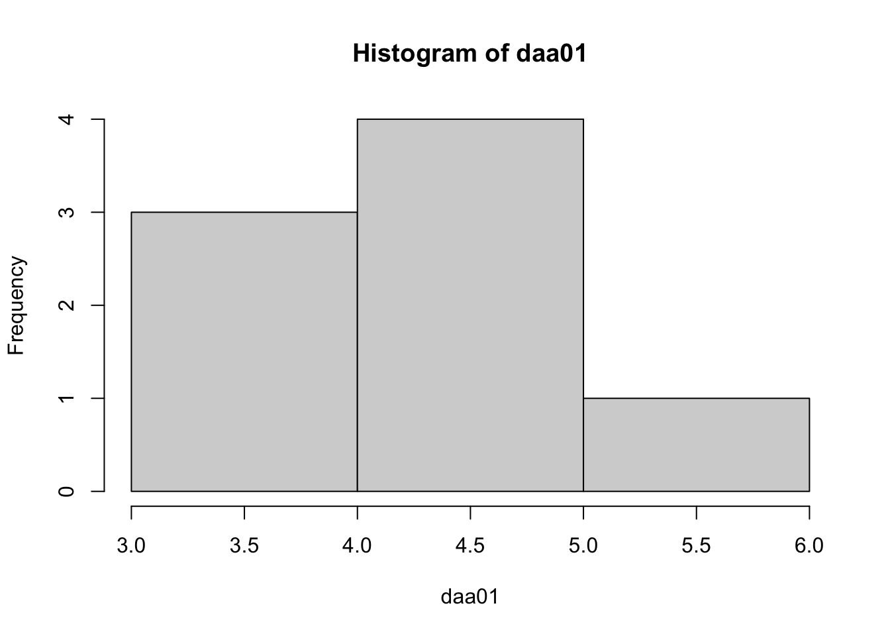

library(tidyverse)
library(gt)1 偏差平方和
\(\displaystyle\sum^{n}_{i=1}(x_i-\overline{x})^2\)
daa01<-c(5,6,3,5,5,4,5,4)
sum(
(daa01-mean(daa01))^2
)[1] 5.8752 分散 (標本分散)
\(s^2=\frac {\displaystyle\sum^{n}_{i=1}(x_i-\overline{x})^2} {n}\)
sum(
(daa01-mean(daa01))^2
)/
length(daa01)[1] 0.734375or
var(daa01)*(length(daa01)-1)/length(daa01)[1] 0.7343753 標準偏差(標本分散の平方根)
\(s=\sqrt{\frac {\displaystyle\sum^{n}_{i=1}(x_i-\overline{x})^2} {n}}\)
sqrt(
var(daa01)*(length(daa01)-1)/length(daa01)
)[1] 0.8569568or
sd(daa01)*
sqrt(
(length(daa01)-1)/length(daa01)
)[1] 0.85695684 変動係数
\(C.V.=\frac {s} {\overline{x}}\)
sd(daa01)*
sqrt(
(length(daa01)-1)/length(daa01)
)/
mean(daa01)[1] 0.1852885 相関係数
\(r=\frac {\displaystyle\sum^{n}_{i=1}(x_i-\overline{x}) (y_i-\overline{y})} {\sqrt{ {\displaystyle\sum^{n}_{i=1}(x_i-\overline{x})^2}} \sqrt{ {\displaystyle\sum^{n}_{i=1}(y_i-\overline{y})^2}}}\)
daa02<-c(7,8,3,5,4,3,8,6)
cor(daa01,daa02,method="pearson")[1] 0.7155814plot(daa01,daa02)
6 正規分布
curve(dnorm(x,mean=0,sd=1),from=-4,to=4)
7 ヒストグラム
7.1 グラフ
daa03<-hist(daa01)
7.2 度数分布表
tibble(mids=daa03$mids,counts=daa03$counts,density=daa03$density) |>
gt() %>%
tab_header(
title = "Frequency table",
subtitle = "daa01"
)| Frequency table | ||
| daa01 | ||
| mids | counts | density |
|---|---|---|
| 3.5 | 3 | 0.375 |
| 4.5 | 4 | 0.500 |
| 5.5 | 1 | 0.125 |